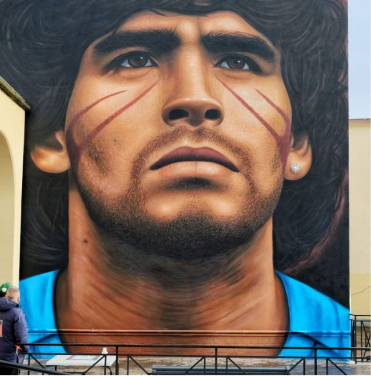

Jorit
Jorit Agoch, noto semplicemente come Jorit, è un artista italiano di origine olandese, nato il 24 novembre 1990 a Napoli. Jorit è rinomato a livello internazionale per i suoi straordinari murales che combinano l'arte di strada con un potente messaggio sociale e politico.
opere
Maradona
Un altro murale iconico situato nel quartiere di San Giovanni a Teduccio, questo ritratto di Diego Armando Maradona rende omaggio al leggendario calciatore argentino, amatissimo a Napoli. L'opera cattura l'intensità e il carisma di Maradona, celebrando il suo legame speciale con la città.
